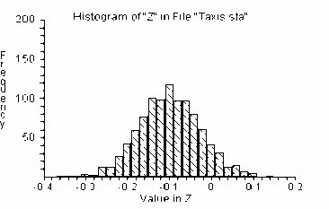
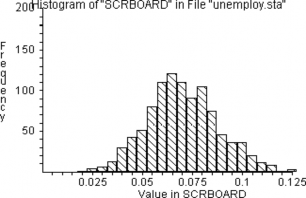
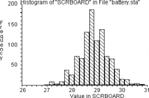
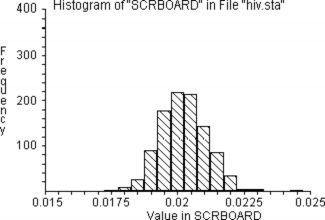
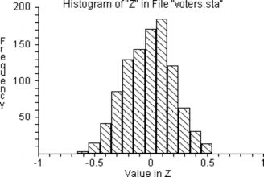
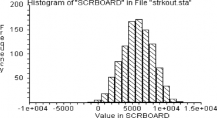
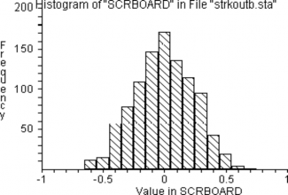
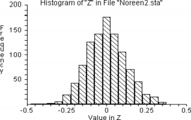

32 Exercise Solutions
This page is an automated and partial import from the original second-edition PDF.
We are in the process of updating this page for formatting, and porting any code from the original RESAMPLING-STATS language to Python and R.
Feel free to read this version for the sense, but expect there to be multiple issues with formatting.
We will remove this warning when the page has adequate formatting, and we have ported the code.
32.1 Solution 18-2
URN 36#1 36#0 pit
URN 77#1 52#0 chi
REPEAT 1000
SAMPLE 72 pit pit$
SAMPLE 129 chi chi$
MEAN pit$ p
MEAN chi$ c
SUBTRACT p c d
SCORE d scrboard
END
HISTOGRAM scrboard
PERCENTILE scrboard (2.5 97.5) interval
PRINT interval
Results:
INTERVAL = -0.25921 0.039083 (estimated 95 percent confidence interval).
32.2 Solution 21-1
REPEAT 1000
GENERATE 200 1,100 a
COUNT a <= 7 b
DIVIDE b 200 c
SCORE c scrboard
END
HISTOGRAM scrboard
PERCENTILE z (2.5 97.5) interval
PRINT interval
Result:
INTERVAL = 0.035 0.105 [estimated 95 percent confidence interval]
32.3 Solution 21-2
We use the “bootstrap” technique of drawing many bootstrap re-samples with replacement from the original sample, and observing how the re-sample means are distributed.
NUMBERS (30 32 31 28 31 29 29 24 30 31 28 28 32 31 24 23 31 27 27 31) a
REPEAT 1000
' Do 1000 trials or simulations
SAMPLE 20 a b
' Draw 20 lifetimes from a, randomly and with replacement
MEAN b c
' Find the average lifetime of the 20
SCORE c scrboard
' Keep score
END
HISTOGRAM scrboard
' Graph the experiment results
PERCENTILE scrboard (2.5 97.5) interval
' Identify the 2.5th and 97.5th percentiles. These percentiles will
' enclose 95 percent of the resample means.
Result:
INTERVAL = 27.7 30.05 [estimated 95 percent confidence interval]
32.4 Solution 21-3
NUMBERS (.02 .026 .023 .017 .022 .019 .018 .018 .017 .022) a
REPEAT 1000
SAMPLE 10 a b
MEAN b c
SCORE c scrboard
END
HISTOGRAM scrboard
PERCENTILE scrboard (2.5 97.5) interval
PRINT interval
Result:
INTERVAL = 0.0187 0.0219 [estimated 95 percent confidence interval]
32.5 Solution 23-1
Create two groups of paper cards: 25 with participation rates, and 25 with the spread values. Arrange the cards in pairs in accordance with the table, and compute the correlation coefficient between the shuffled participation and spread variables.
Shuffle one of the sets, say that with participation, and compute correlation between shuffled participation and spread.
Repeat step 2 many, say 1000, times. Compute the proportion of the trials in which correlation was at least as negative as that for the original data.
DATA (67.5 65.6 65.7 59.3 39.8 76.1 73.6 81.6 75.5 85.0 80.3
54.5 79.1 94.0 80.3 89.6 44.7 82.7 89.7 83.6 84.9 76.3 74.7
68.8 79.3) partic1
DATA (13 19 18 12 20 5 1 1 2 3 5 6 5 4 8 1 3 18 13 2 2 12 17 26 6)
spread1
CORR partic1 spread1 corr
' compute correlation - it’s -.37
REPEAT 1000
SHUFFLE partic1 partic2
' shuffle the participation rates
CORR partic2 spread1 corrtria
' compute re-sampled correlation
SCORE corrtria z
' keep the value in the scoreboard
END
HISTOGRAM z
COUNT z <= -.37 n
' count the trials when result <= -.37
DIVIDE n 1000 prob
' compute the proportion of such trials
PRINT probConclusion: The results of 5 Monte Carlo experiments each of a thousand such simulations are as follows:
prob = 0.028, 0.045, 0.036, 0.04, 0.025.
From this we may conclude that the voter participation rates probably are negatively related to the vote spread in the election. The actual value of the correlation (-.37398) cannot be explained by chance alone. In our Monte Carlo simulation of the null-hypothesis a correlation that negative is found only 3 percent — 4 percent of the time.
Distribution of the test statistic’s value in 1000 independent trials corresponding to the null-hypothesis:

32.6 Solution 23-2
NUMBERS (14 20 0 38 9 38 22 31 33 11 40 5 15 32 3 29 5 32)
homeruns
NUMBERS (135 153 120 161 138 175 126 200 205 147 165 124
169 156 36 98 82 131) strikeout
MULTIPLY homerun strikeout r
SUM r s
REPEAT 1000
SHUFFLE strikeout strikout2
MULTIPLY strikout2 homeruns c
SUM c cc
SUBTRACT s cc d
SCORE d scrboard
END
HISTOGRAM scrboard
COUNT scrboard >=s k
DIVIDE k 1000 kk
PRINT kk
Result: kk = 0
Interpretation: In 1000 simulations, random shuffling never produced a value as high as observed. Therefore, we conclude that random chance could not be responsible for the observed degree of correlation.
32.7 Solution 23-3
NUMBERS (14 20 0 38 9 38 22 31 33 11 40 5 15 32 3 29 5 32)
homeruns
NUMBERS (135 153 120 161 138 175 126 200 205 147 165 124
169 156 36 98 82 131) strikeou
CORR homeruns strikeou r
REPEAT 1000
SHUFFLE strikeou strikou2
CORR strikou2 homeruns r$
SCORE r$ scrboard
END
HISTOGRAM scrboard
COUNT scrboard >=0.62 k
DIVIDE k 1000 kk
PRINT kk r
Result: kk = .001
Interpretation: A correlation coefficient as high as the observed value (.62) occurred only 1 out of 1000 times by chance. Hence, we rule out chance as an explanation for such a high value of the correlation coefficient.
32.8 Solution 23-4
READ FILE “noreen2.dat” exrate msuppl
' read data from file
CORR exrate msuppl stat
' compute correlation stat (it’s .419)
REPEAT 1000
SHUFFLE msuppl msuppl$
' shuffle money supply values
CORR exrate msuppl$ stat$
' compute correlation
SCORE stat$ scrboard
' keep the value in a scoreboard
END
PRINT stat
HISTOGRAM scrboard
COUNT scrboard >=0.419 k
DIVIDE k 1000 prob
PRINT probDistribution of the correlation after permutation of the data:

Result: prob = .001
Interpretation: The observed correlation (.419) between the exchange rate and the money supply is seldom exceeded by random experiments with these data. Thus, the observed result 0.419 cannot be explained by chance alone and we conclude that it is statistically significant.